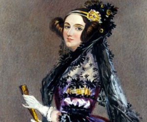

Help Ada Lovelace, the world's first computer programmer, remove bugs from the world's very first program!

Ada Lovelace was the world's first computer programmer. Born Augusta Ada King, Countess of Lovelace, Ada lived from December 10th, 1815 until November 27th 1852. She was an English mathematician and writer chiefly known for her work on Charles Babbage's early mechanical general-purpose computer, the Analytical Engine. Her notes on the engine include what is recognised as the first algorithm intended to be carried out by a machine.